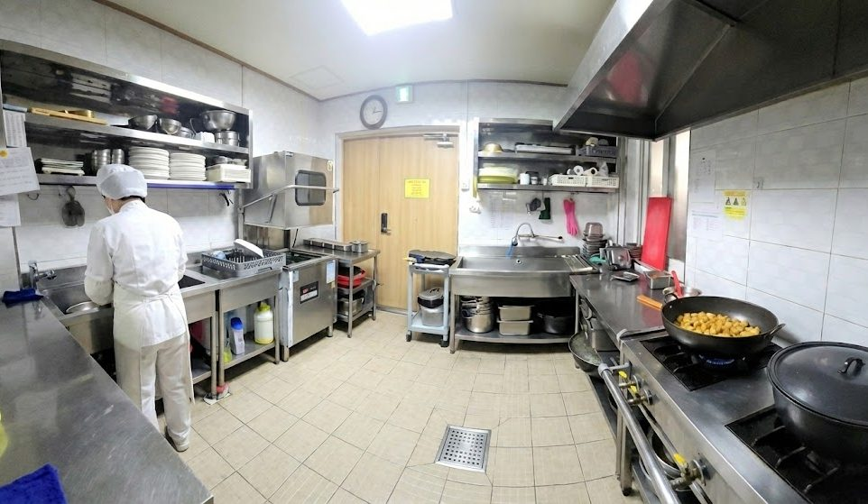
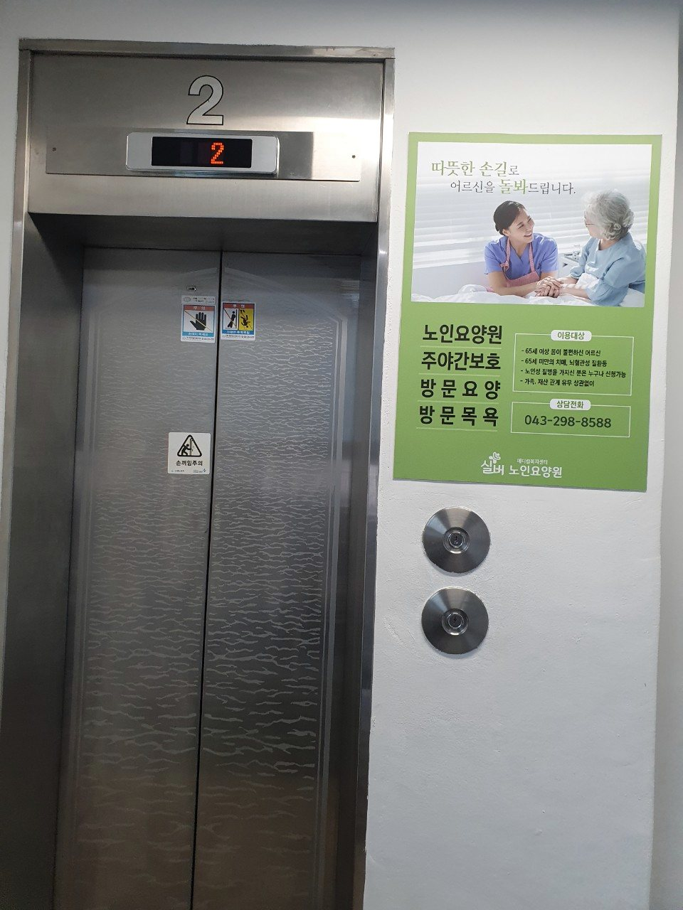

식사
식사 준비 환경과 섭취 상태를 살피고, 개별 식사 관련 주의사항은 상담을 통해 확인합니다.
Space & Daily Life
어르신이 생활하는 실제 공간과 매일의 기본을 관리하는 방식을 소개합니다.
공간 안내
이동 동선과 휴식 위치, 위생 관리와 식사 준비 환경을 일상에서 사용하기 편하도록 살핍니다. 사진은 현재 기관의 실제 공간을 중심으로 구성했습니다.
어르신과 직원의 얼굴이 식별되는 사진은 사용하지 않았으며, 가포마사지 사진은 얼굴을 충분히 흐림 처리한 자료만 포함했습니다.
시설 사진
사진과 실제 배치는 촬영 시점과 운영 상황에 따라 일부 달라질 수 있습니다.






생활의 기본
식사 준비 환경과 섭취 상태를 살피고, 개별 식사 관련 주의사항은 상담을 통해 확인합니다.
생활 공간과 공용 공간을 정돈하고 목욕과 개인위생 지원 시 안전을 함께 고려합니다.
무리한 활동보다 그날의 컨디션을 살피며 활동과 휴식의 균형을 생각합니다.
이동 동선과 설비를 확인하고 생활 중 발견되는 위험 요소를 꾸준히 살핍니다.
방문 전 확인
운영 상황을 확인해야 하므로 방문 전 전화로 가능한 시간을 예약해 주세요.
홈페이지 사진은 실제 기관 공간을 촬영한 자료입니다. 가구 배치와 생활 환경은 촬영 시점이나 운영 상황에 따라 달라질 수 있습니다.
생활 공간, 하루 일정, 식사와 위생 지원, 비용, 보호자 소통 방법을 중심으로 확인하시면 좋습니다.